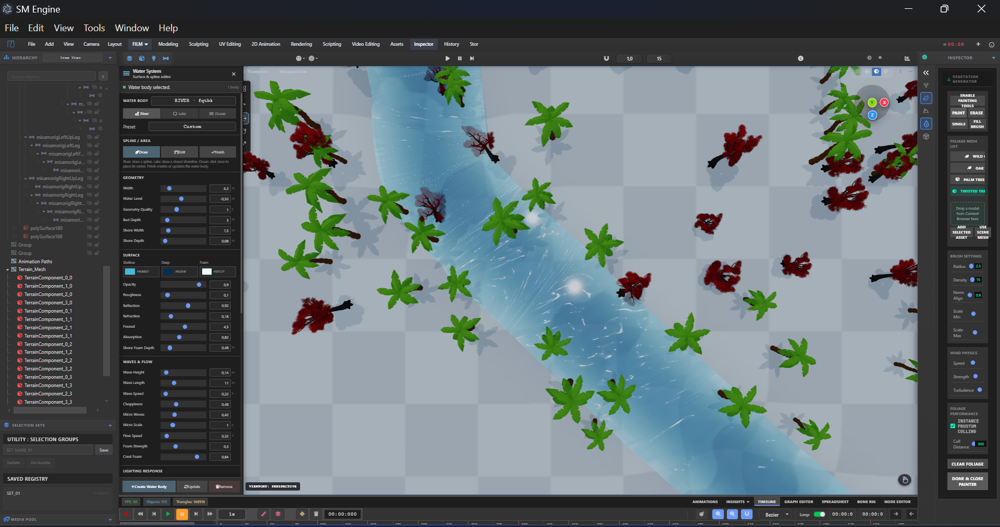
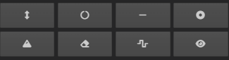
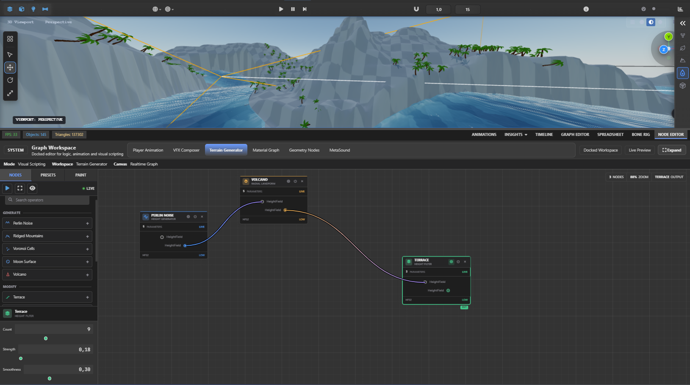

Terrain Sculpting Workspace
The dedicated TERRAIN workspace turns SM Engine into a full landscape editor. It builds a component-based heightfield terrain with up to 64k vertices, exposes a professional brush toolset (Raise/Lower, Smooth, Flatten, Pinch, Clay, Scrape, Noise, Perlin, Hydraulic & Thermal Erosion), and integrates a node-based Terrain Generator editor for procedural height manipulation.
F3 in GameMode) and pick Terrain
Sculpting.
The sculpting panel opens automatically in the inspector and a terrain is auto-created on first
entry.
The Foliage Paint and Landscape Sculpting inspector buttons
and the
#sculpting-toolbar-btn toolbar tab also open this workspace.
Terrain Data Model

A landscape is a THREE.Group named Terrain_Mesh holding a grid of
component
meshes. Height data lives in a single TerrainData buffer shared by all components:
| Property | Default | Description |
|---|---|---|
sectionSize |
63 | Quads per component edge (31 / 63 / 127) |
componentsX / componentsZ |
4 × 4 | Component grid (1–32 each) |
quadsPerComponent |
63 | 63 × 63 quads per component mesh |
resolutionX / Z |
253 × 253 | Vertex grid (quads + 1) |
width / length |
252 × 252 | World units, centered on origin |
vertexCount |
64,009 | Total height samples |
heightScale |
1 | World Y = height × heightScale |
Mesh Y position equals getHeight(gx, gz) * heightScale, so with height scale 1 the
terrain
height values map 1:1 to world Y. Normals are recomputed automatically after every edit. Each
terrain
carries its own 512×512 procedural checker material from the active theme
(realistic, grassland, desert, arctic, volcanic, moon).
Creating a Landscape

Open the Manage tab of the sculpting panel to configure and create the terrain:
- Section Size — 31 / 63 / 127 quads per component edge.
- Sections per Component — 1 or 2 (subdivides components).
- Components X / Z — component count along each axis (1–32).
- Quad Size — world size of a single quad (default 1).
- Height Scale — vertical exaggeration multiplier (default 1).
- Location X / Y / Z — world-space position of the landscape.
- Initial Height — Flat or Procedural Noise (fractal simplex, octaves with persistence, amplitude).
The panel shows a live summary (resolution, component count, world size, vertex count). Click CREATE LANDSCAPE — the button becomes REPLACE LANDSCAPE once a terrain exists. Creation switches to Sculpt mode and auto-activates the Raise/Lower brush.
window.createTerrain(settings) / window.createLandscape(settings)
create a
landscape from any script. Accepted settings include sectionSize,
componentsX/Z,
quadSize, heightScale, initialMode
("flat"|"noise"),
noise parameters and theme.
Sculpting Brushes

Painting is stroke-based: click or drag on the terrain while in Sculpt mode. Hold Shift to invert the brush (lower instead of raise, and vice-versa). Each stroke captures a history snapshot, so Undo/Redo restore full height data.
| Brush | Tool ID | Behavior |
|---|---|---|
| Raise / Lower | raiseLower |
Additive height with falloff; Shift lowers |
| Smooth | smooth |
Lerps each vertex toward its 8-neighbor average |
| Flatten | flatten |
Lerps toward the sampled hit height |
| Pinch | pinch |
Accentuates ridges toward the local average |
| Clay | clay |
Soft additive buildup (quadratic falloff) |
| Scrape | scrape |
Only lowers — carves down to the sampled height |
| Noise | noise |
Random jitter displacement |
| Perlin | PERLIN |
Coherent noise displacement (freq 0.15) |
| Hydraulic Erosion | erosion |
Droplet-style erosion toward lowest neighbor |
| Thermal Erosion | thermalErosion |
Reduces slopes above a threshold angle |
Brush Settings
- Radius — 0.5–100 world units (default 5).
- Strength — 0.01–1 (default 0.25).
- Falloff — 0–0.95 (default 0.5, smoothstep curve).
- Symmetry — mirrors strokes across X or Z axis.
The brush preview disc (cyan radial gradient with inner falloff ring) tracks the terrain surface and
orients
to the hit normal. Set tools from console with window.setActiveTerrainTool("smooth") or
window.setTerrainSculptTool("flatten").
Terrain Node Editor

The Nodes tab opens the node graph. The graph operates on the full height buffer — press Apply Graph (or use the LIVE toggle) to bake it into the terrain. Nodes are grouped into Generate, Modify and Mask categories:
| Node | Category | Effect |
|---|---|---|
| Perlin Noise | Generate | Fractal simplex noise (amplitude, octaves, persistence) |
| Ridged Mountains | Generate | Ridged multifractal mountain ridges |
| Voronoi Cells | Generate | Cell-based features (density, blending) |
| Moon Terrain | Generate | Seeded craters with rims, clusters and ejecta rays |
| Volcano | Modify | Adds cone + rim − crater bowl |
| Plateau | Modify | Raises toward a target level with exponential falloff |
| Canyon Carve | Modify | Noise-winding channel carved with roughness |
| Terrace | Modify | Quantizes heights into N smooth steps |
| Thermal Smooth | Modify | 3×3 box blur |
| Invert Height | Modify | Min/max height inversion |
| Height Mask Modify | Mask | Lerps heights inside a min/max band |
| Hydraulic Erosion | Simulation | Droplet erosion simulation (iterations, rain, solubility) |
The Presets tab provides one-click stacks: Mountain Range, Rolling Hills, Grand Canyon, Volcanic Island, Desert Dunes and Moon Surface. The Paint tab paints a mask that controls how strongly the graph applies per-vertex (Paint/Erase with brush size and strength).
History & Persistence
The terrain system keeps its own undo stack (NS.history, 30 steps) capturing full
height snapshots
per stroke and per graph apply. It also dispatches sm:terrain-created,
sm:terrain-changed and sm:terrain-node-applied events that other systems
(water,
vegetation) subscribe to.
Scripting Reference
// Create or replace a landscape
window.createTerrain({ theme: "moon", componentsX: 8, componentsZ: 8, initialMode: "noise", noiseAmplitude: 12 });
// Switch the active brush
window.setActiveTerrainTool("flatten");
window.setTerrainSculptTool("thermalErosion");
// Access the running system
const NS = window.TerrainSculpting;
const terrain = NS.getLandscape();
const data = terrain.userData.terrainData;
data.setHeight(100, 100, 12.5);
terrain.userData.componentManager.syncAll(); // rebuild all meshes
// Open the workspace + panel
window.requestGlobalSculptingWorkspace?.();
// Node editor
const editor = window.ensureTerrainNodeEditor();
editor.setTarget(window.terrain);